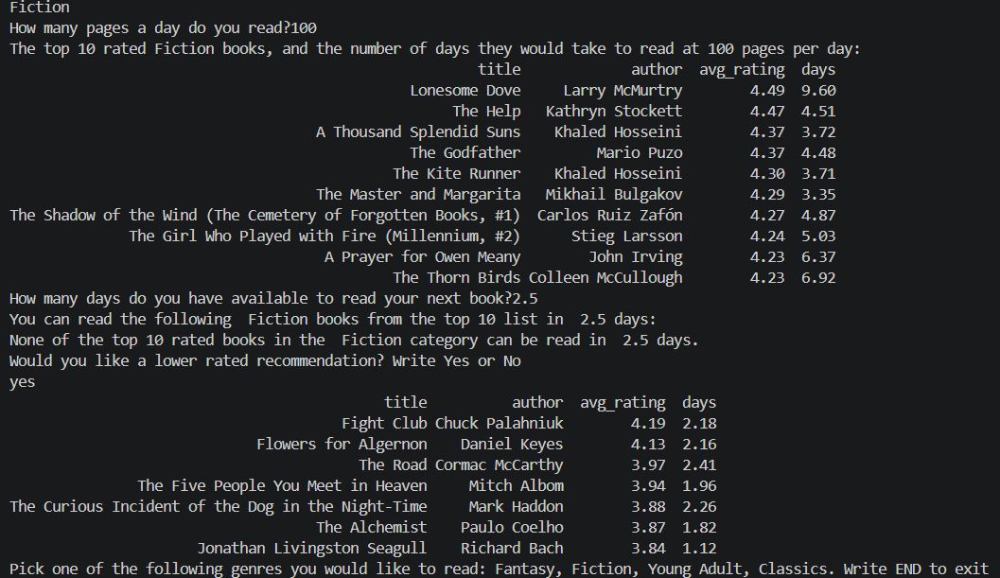

Algorithm Development Process
Planning: Analysis and Specification
In our algorithm development process, we followed Polya’s steps for problem-solving, and the computer problem-solving process described by Dale & Lewis (2019).
First, we analysed and specified the problem we wanted to solve: recommending high-rated books to users based on their genre preferences and time limitations. We considered what data we would need to answer these questions:
- book genre
- book title
- book author
- average Goodreads ratings of the book
- unique identifier for the book to keep us right
- page number
- user's required genre
- user's speed of reading
See the details of researching and finding a dataset here: Dataset
Then, we looked for the connections between the data and the problem:
- Genre: to select the books in the user’s desired genre
- Average ratings: to find the highest rated books to recommend
- Page number: to calculate how long reading each book would take
- Title, Author: to help the user identify the books we are recommending
We found our existing data insufficient to solve our problem, as we were missing information about the user’s required genre, reading speed, and time limitations. We would request these inputs from the user in the algorithm.
Divide and Conquer
Next, we broke the problem down into smaller steps, to understand the logic behind the algorithm needed:
- Get user input for genre, speed of reading, and reading timeframe
- Select all the books from the dataset that are in the user's requested genre
- Calculate how long each of the selected books would take to read
- Filter the above books for those that fit in the user’s timeframe
- Sort the selected list of books by the average rating, in descending order
- Display the recommendations: the top 10 rated books (or fewer, if not available), that can be read under the time given at the speed given - with their respective reading durations
Thus, we identified what the solution will look like, the data needed to reach it, and the steps to take to get there.
Upon discussion, we came to the conclusion that leaving the genre question open ("Which genre would you like to read?") would require a very large dataset, exceeding the scope of this project. Therefore, we decided to limit the genre choices to 4 (Fantasy, Fiction, Classics, Young Adult) at this stage, to keep the dataset manageable. We picked the genres from the dataset that had the most books available in them, to be able to check the reliability of our top 10 sorting algorithm.
Pseudocode
After breaking the problem down into steps, we wrote pseudocode instructions following the plan.
Decisions
- To process the 2D data in the dataset, we opted for arrays. We wrote a searching algorithm going through the books in the dataset, adding the ones that fulfilled the genre and the timeframe conditions to a new array. At this stage, we also added a new attribute to the selected records: days they take to read (variable days), calculated by dividing the page numbers by the user’s speed of reading (measured in pages per day).
- For the sorting of the selected books by average rating in descending order, we opted for a selection sort algorithm, since we only needed the first 10 highest rated books. This way, we could stop the algorithm after the first 10 biggest rated books were found, avoiding unnecessary sorting, and making it faster and more efficient than sorting through the whole list.
- Originally, we wrote instructions for each step as outlined above, however, we later optimised the algorithm by uniting steps 2-4 into a single WHILE loop. Instead of checking all the books for the genre condition, copying the selection into an array, then checking the books in the new array for the time condition, we only run through the books once, checking each for genre and time, adding the ones that meet both conditions to a new array. Thus, we save time and memory space.
The decisions we made throughout the process were led by the goal of finding the easiest and fastest way to solve the problem. While memory capacity and speed of computing might not be an issue at the current size of the project, if the dataset were to be expanded, such decisions could make a difference.
Testing and Optimising
We walked through the steps of the algorithm many times in a desk checking process (Dale & Lewis, 2019) to check all possible outcomes and logical steps. We revised and re-sequenced some parts, correcting nesting logical fallacies (infinite loops) and solving some of the identified issues and special cases as seen below:
THIS WILL BE STYLED INTO A TABLE Problem - Solution (Table) What if the user enters an invalid input: typos, wrong datatypes, negative values, uppercase/lowercase that cannot be matched with the dataset values. To solve this, we added an event controlled loop as a validation step, ensuring that the user repeatedly enters values until a valid input is reached. What if none of the books can be read in the timeframe: We offer the user the option to try again, where they can change the speed and timeframe inputs, or opt for a different genre. To achieve this, we placed the whole algorithm inside a while loop based on a boolean operator. The user is asked at the end if they want to try again, where operator is changed to FALSE if they answer “No”. The user is also offered a chance to end the program by inputting “End” to the first prompt. What if there are no books available in the selected genre - Given that we offered the genre choices to the user based on the data available in our dataset, this would not be the case. However, we added a validation check in the form of an IF selection, that checks if the new array is empty, upon which condition, a message is displayed to the user and they are offered to try again. What if there is nothing to sort? - Also a result of the previously mentioned incident (no books meeting the criteria), the algorithm might be faced with an empty array to sort through. Therefore, we added our sorting step inside an IF clause that checks for this event. We also accounted for the possibility of there being fewer than 10 books to sort in the conditions of our sorting and displaying steps.Implementation phase: Python
After the pseudocode instructions were completed, we decided to translate our algorithm into the Python programming language, so that it could be executed and tested using our actual dataset.
For this step, strict syntax rules had to be followed. To check for syntax errors, we checked the code in an online python editor, before running it on our local system importing the csv dataset.
To work with our csv dataset, we installed and imported the pandas library, used for reading, filtering, sorting, and analyzing datasets.
Demonstration run of the algorithm

Maintenance phase: Limitations and Future Recommendations
We recognise the limitations of our algorithm in providing book recommendations given the limited dataset used. At this stage of the project, the algorithm can recommend books from a limited number of genres. Furthermore, the user is unaware of how many books the top 10 are chosen from. For future directions, we recommend extending the dataset, improving the user recommendations. We also recommend regularly updating the dataset to include new book releases and updated user review scores.